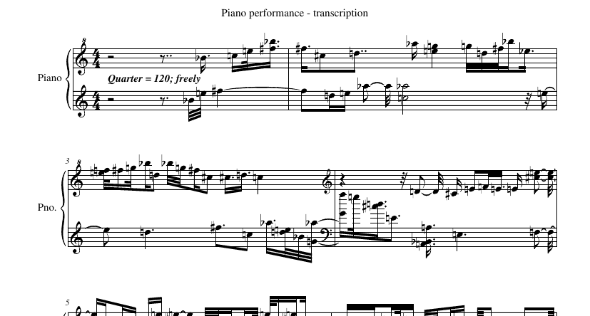
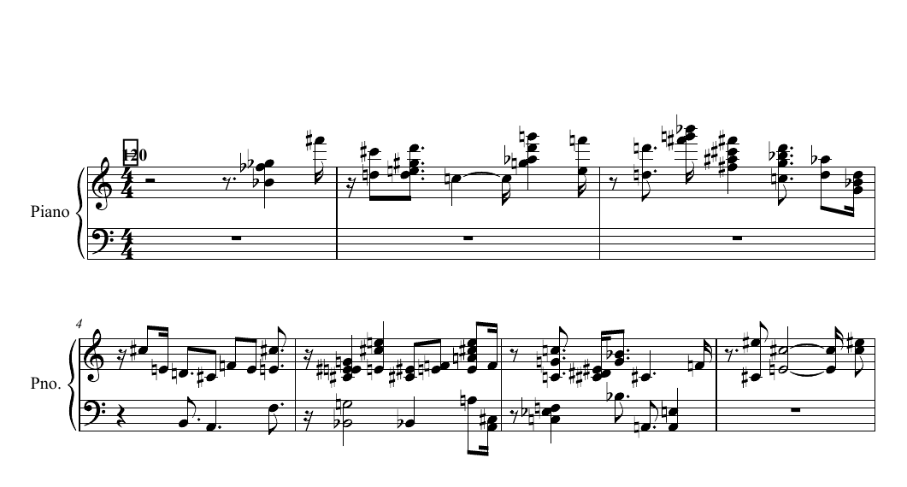

已转写出有实际信号的音符集合
提交 1094 个音符，参考 1103 个，数量相差 9；全局音高 F1 0.749、时间覆盖宏平均 0.757、音区宏平均 0.744。它没有靠大量堆叠音符或放弃整段来凑文件，但数量接近仍不能证明音符身份正确。
把这一次真实演奏变成可以照着弹的乐谱。
任务定义运行结果运行轨迹Astra 专项复盘横向失败分析模型交付
给定一段 77 秒的真实钢琴演奏视频，结合录音与键盘画面，将指定区间的实际击键转写成可以阅读、编辑和演奏的乐谱。
交付 MusicXML、完整 PDF、与谱面对应的 MIDI 和转写说明；可另交符合规则的时间映射。谱面必须记录这一次演奏，不能用记忆中的出版谱替换。
当前使用交付导向 v2 评分：音高与覆盖 35、严格起音 20、MIDI/XML 一致性 10、谱面可读性与记谱 35。加权分再乘交付系数；不可用的作品保留部分分，但不能靠文件齐全获得高分。
历史答卷采用 v2 事后复评；最新 Astra 记录注明 v2 在该次答题前已冻结。原始题面和 v1 自动分继续保留，不将不同口径混为同一排名实验。至少 60 分还需满足准确性与交付门槛。
# 任务：真实钢琴演奏视频转写为可用乐谱
你得到 `input/performance.mp4`，一段 77 秒的真实人类钢琴演奏。你的唯一主要目标是把**这一次实际演奏**转写成准确、可阅读、可演奏的钢琴谱。请同时利用自然录音和键盘画面，保留实际发生的音符、重复击键、声部和先后关系，不要用你记忆中的出版谱替换演奏，也不要把疑似演奏差异静默“纠正”为原作。
只可访问本 candidate 目录和你自己生成的工作文件；可使用本地离线计算、音频分析、视频逐帧查看及制谱工具。禁止联网、检索曲谱、访问任务的隐藏源文件/评测资料、调用其他语言模型或外部模型服务。无需识别曲名或演奏者。
## 边界与转写范围
视频时间从 0 秒开始。必需转写**新击键起音位于 `[1.230, 75.480)` 秒**的全部音符，两个端点均按视频时间解释，右端不含。其余时间是理解前后文的余量；余量中的击键可以记作上下文，但不参与自动音符评分。片段开始前已按下的持续音不需要补一个假起音。评分快结束时已经起音的音符仍须写出，可合理延续其记谱时值，不要求猜测画面外的准确释放时刻。
音高与时序必须来自该演奏。允许合理的等音拼写、左右手/谱表分配、拍号和节拍单位、连音线、复合节奏及表现性速度处理。必须把需要计数的反复、颤音和装饰性重复击键写成可解析的实际音符；为兼容导出，优先展开反复。无需指法、精确力度数值、踏板深度，也不要求每次手指离键、踏板延音终点与记谱时值相同。记谱时值应服从可理解的音乐节奏与声部关系。
## 提交
在提交目录根部提供以下四个文件：
- `score.musicxml`：可解析的、包含实际音符的 MusicXML（非压缩 `.mxl`），建议钢琴大谱表，含必要谱号、拍号、小节、速度与声部。它是自动评测读取音符的唯一来源。
- `score.pdf`：与 MusicXML 对应的完整可读乐谱。不能只交钢琴卷帘图、频谱图或音符表。
- `score.mid`：从同一乐谱导出的标准 MIDI type 0/1、PPQ 格式。与 MusicXML 的音高、展开后的四分音符位置、连音线合并后的时值保持一致；不要另交一份与谱面不同的“准确 MIDI”。
- `notes.md`：简述节拍/速度处理、对齐方法、边界处理和不确定之处。说明任何有意的记谱取舍；不要用说明替代缺失音符。
如需把规整的记谱节拍映射到演奏中的自由速度，**仅可增加一个可选文件** `alignment.json`。不需要其他交付物。
## 记谱时间与录音时间对齐
可选文件格式为 `{"anchors": [[0, 0], [8, 4], [16, 8]]}`。这只是格式示例，不是该演奏的对齐答案。每个坐标为 `[q, t]`：`q` 是 MusicXML 展开后从谱面起点起累计的四分音符数，`t` 是视频秒数。小节号、拍号和弱起均不能重置 `q`；例如 6/8 小节占 3 个四分音符单位。锚点可以落在休止或小节线上，不必对应某个音符。
评测仅对相邻锚点做线性插值，且对所有音高、谱表、声部使用同一个映射。必须覆盖 MusicXML 全部音符的起音位置，不外推。限制如下：
- 2–160 个锚点，文件不超过 50 KB；只允许顶层键 `anchors`，不能包含音高或逐音事件表。
- 两坐标严格递增；相邻锚点至少相隔 0.5 个四分音符，且相隔 0.5–8 秒。
- 每段斜率为 0.15–3 秒/四分音符；相邻段速度比例变化不超过 4 倍。
- `q >= 0`，`0 <= t <= 77.5`。锚点应说明实际整体节拍位置，不能对各音符独立移动或改变次序。
没有 `alignment.json` 时，使用所交 MIDI 的 tempo map 将**MusicXML 音符位置**换算成秒：谱面 `q=0` 对应视频 `t=0`，需要时请保留开头休止。MIDI 速度限 20–400 BPM，最多 160 个有效速度段；相邻速度变化至少隔 0.5 个四分音符和 0.5 秒，倍率不超过 4。相同位置的 tempo 采用最后一个。不做自动整体平移、移调或动态时间扭曲。若已有 sidecar 但格式非法，不静默改用 MIDI；音符时间无法评估时音符项为零。有效 sidecar 下，MIDI tempo 可与演奏秒数不同，但 MIDI 的乐谱节拍位置仍须与 XML 一致。
## 公开评分（100 分）
自动部分 90 分，独立谱面复核 10 分。音符匹配采用**同音高、一对一、同音高时间顺序不交叉的最大匹配**。每次实际击键计一个音符；连音线的延续不重复计数。多写、漏写、重复写出的音符都会影响 F1：`2 × 匹配数 / (提交数 + 参考数)`。等音拼写不影响音高匹配。
| 项目 | 分值 | 规则 |
|---|---:|---|
| 全段音高/击键准确性 | 30 | 同音高且起音误差 ≤ 200 ms 的 F1 |
| 时间覆盖 | 15 | 将评分窗口等分为 6 段，各段 F1 的算术平均 |
| 音区覆盖 | 15 | MIDI 音高 `<60`、`60–77`、`>=78` 三个音区 F1 的算术平均 |
| 起音节奏 | 25 | 同音高且起音误差 ≤ 80 ms 的 F1 |
| 有效 MusicXML | 1 | 能解析且含音符 |
| MIDI 与 MusicXML 一致 | 3 | 同音高起音差 ≤ 1/96 四分音符，时值差 ≤ `max(1/32 四分音符, XML 时值的20%)` 的一对一 F1 |
| 转写说明 | 1 | `notes.md` 存在且非空 |
| 乐谱人工复核 | 10 | 排版可读性 4、音乐记谱/声部与时值可用性 3、PDF 与 XML 内容一致完整 3 |
时间段和音区均从同一次全局 200 ms 匹配计算，不为每个小段重新寻找有利对齐。跨时间边界的正确匹配分别计入预测端和参考端所在段：该段分子为两端匹配计数之和，分母为两端音符总数。音区相同的匹配自然等价于普通 F1。因此密集伴奏不能完全掩盖某个时段或音区的遗漏。
自动部分不比较手指离键时刻或踏板衰减时刻，不要求 MIDI 模仿这些微观时值。PDF/音乐语义由一名后续独立复核者判断；未复核时这 10 分为 pending/null，不预先给分。人工项可给半分。缺失/不可读 PDF 为 0/10。其他缺失文件只影响上述对应项目及依赖它的计算，不设额外总分上限：例如缺失 MusicXML 没有可评音符，准确 MIDI 或 sidecar 不能代替它；缺失 MIDI 失去一致性分，并且在没有有效 sidecar 时无法提供时间映射。
## 本地工具提示
环境有 Python（建议 `python -E -X utf8`）、ffmpeg/ffprobe，以及 NumPy、SciPy、mido、music21、verovio、svglib、reportlab。可用 ffmpeg 提取音频或指定时刻的帧；频谱/短时傅里叶分析可辅助听辨。原始输入不要变速或移调；本地慢放检查可作为分析手段，交付谱面仍应对应原始演奏。
music21 可写出 MusicXML/MIDI；verovio 可把 MusicXML 渲染为 SVG，再用 svglib/reportlab 合成 PDF。建议重新读取导出的 MusicXML/MIDI 检查音符数量与节拍位置，并实际查看 PDF 的所有页。MIDI 自动导入后的节奏和排版不保证可读，需要自行整理。所有输入使用说明和署名见 `SOURCE_CREDIT.md`。
按当前展示分数从高到低排列，满分 100。每个模型展示当前采用的一次答卷。
| 模型 | Harness | 推理强度 | 得分 / 100 | 交付判断 | 查看 |
|---|---|---|---|---|---|
| gpt-6-astra | Codex CLI | high | 44.67 | 未通过 | 评分证据 · 轨迹 |
| gpt-6-sol | Codex CLI | high | 33.01 | 未通过 | 评分证据 · 轨迹 |
| k3 | Codex CLI | high | 6.25 | 未通过 | 评分证据 · 轨迹 |
| glm-5.3-flash | Codex CLI | high | 5.59 | 未通过 | 评分证据 · 轨迹 |
| gpt-6-luna | Codex CLI | high | 2.19 | 未通过 | 评分证据 · 轨迹 |
以下仅供追溯，不参与当前排名。没有有效分数的记录标为“未评分”。原始编号保留在归档文件中。
| 模型 | 归档记录 | 归档分数 | 证据 |
|---|---|---|---|
| gpt-6-astra | missing8 | 14.02 | 运行记录 · 评分 |
| gpt-6-sol | historical | 12.82 | 运行记录 · 评分 |
| k3 | 20261022_k3a6_60_sola4_40_serial | 1.00 | 运行记录 · 评分 |
| glm-5.3-flash | 20261021_glm53_flash_recovery | 0.00 | 运行记录 · 评分 |
| k3 | 20261021_k3_a4_a6_isolated | 0.00 | 运行记录 · 评分 |
| k3 | missing8 | 未评分 | 运行记录 · 评分 |
| glm-5.3-flash | 20261021_glm53_flash_a1_a7 | 未评分 | 运行记录 · 评分 |
| glm-5.3-flash | 20261021_glm53_flash_two_workers | 未评分 | 运行记录 · 评分 |
已建立有效的音频分析与多格式导出流程，但音符识别仍有明显误检漏检，谱面也需要大幅整理。能生成可解析文件，距离可直接照着弹还有差距。
| 评分项目 | 得分 / 满分 | 该项得分率 | 如何理解 |
|---|---|---|---|
| 全局音高 / 击键匹配 | 14.984 / 20 | 74.9% | 200 ms 匹配 F1 = 0.7492。 |
| 时间覆盖 | 5.679 / 7.5 | 75.7% | 六个时间段 F1 的宏平均 = 0.7572。 |
| 音区覆盖 | 5.579 / 7.5 | 74.4% | 低、中、高音区 F1 的宏平均 = 0.7439。 |
| 严格起音 | 14.456 / 20 | 72.3% | 80 ms 匹配 F1 = 0.7228，超过该项验收门槛 0.7。 |
| MIDI / XML 一致性 | 10 / 10 | 100.0% | 一致性 F1 = 1；两份输出相符，不代表与演奏完全相符。 |
| PDF 排版可读性 | 11.25 / 15 | 75.0% | 人工复核档位 0.75；字形可辨，但局部密集。 |
| 音乐记谱可演奏性 | 7.5 / 15 | 50.0% | 人工复核档位 0.5；声部、时值与符梁需要实质整理。 |
| PDF / XML 忠实完整性 | 5 / 5 | 100.0% | 复核档位 1；未发现实质漏页、漏声部或内容替换。 |
音高与覆盖三项合计 26.242 / 35，严格起音 14.456 / 20，一致性 10 / 10，谱面三项合计 23.75 / 35。由于记谱需要实质整理，交付等级为“需大幅修订”，乘 0.6。当前分数已经低于 59，因此没有再触发验收失败的 59 分封顶。
| 验收维度 | 本次结果 | 要求 | 是否满足 |
|---|---|---|---|
| 总分与交付等级 | 44.669；需大幅修订 | 至少 60 分，且交付可直接使用 | 未满足 |
| 音高精确率 / 召回率 | 0.752 / 0.746 | 两者均 ≥ 0.8 | 未满足 |
| 严格起音 F1 · 80 ms | 0.723 | ≥ 0.7 | 满足 |
| 最弱时间段 / 最弱音区 F1 | 0.660 / 0.634 | 两者均 ≥ 0.6 | 满足 |
| MIDI / XML 一致性 | 1.000 | ≥ 0.95 | 满足 |
| 谱面最低复核档位 | 0.5（记谱） | 各项 ≥ 0.75 | 未满足 |
版本口径：原 v1 自动分为 68.061953 / 90，另有 10 分人工项待评，不能与 v2 最终 44.67 / 100 直接比较。全局 v2 规则是面向历史答卷的事后复评版本；最新 Astra 独立评分记录注明 rules_frozen_before_run=true、retrospective=false。本页分别保留这两层记录，不把历史复评说成全部运行前统一冻结。
提交 1094 个音符，参考 1103 个，数量相差 9；全局音高 F1 0.749、时间覆盖宏平均 0.757、音区宏平均 0.744。它没有靠大量堆叠音符或放弃整段来凑文件，但数量接近仍不能证明音符身份正确。
严格起音 F1 0.723 ≥ 0.7；823 个 200 ms 粗略匹配中，794 个也通过 80 ms 严格匹配。说明一旦识别到对应音符，许多起音位置已经较接近，而不是所有事件都只有粗糙的时间估计。
MusicXML 与 MIDI 均为 1094 个音符，一致性 F1=1；PDF 与 XML 未发现实质漏页、漏声部或内容替换。alignment.json 也符合格式约束，为可解析、可编辑和可追溯的交付提供基础。
先以 STFT、NMF 与起音变化寻找候选，再用键盘画面排除部分泛音、扩展低音范围，最终检查音符与时间映射。轨迹有 45 次工具调用，使用 8 个第三方 Python 包及 FFmpeg / Poppler；notes.md 也明确指出 50–66 秒仍需复核，并说明未实际听审。
数量接近掩盖了配对错误：约四分之一的提交与参考事件无法在 200 ms 规则内对应。这些未匹配项可能包括错音、漏音、重复检测或超出时间窗；不能把 271 / 280 全部当作已人工证实的纯音高错误。粗略匹配中约 96.5% 也通过严格窗口，提示主要缺口更偏向事件识别与覆盖，局部节奏量化仍需改进。
| 音区 | 提交数 | 参考数 | F1 · 200 ms |
|---|---|---|---|
| 低音 · MIDI < 60 | 373 | 305 | 0.634 |
| 中音 · MIDI 60–77 | 408 | 388 | 0.837 |
| 高音 · MIDI ≥ 78 | 313 | 410 | 0.761 |
| 视频时间 | 提交数 | 参考数 | F1 · 200 ms |
|---|---|---|---|
| 1.23–13.61 s | 122 | 147 | 0.810 |
| 13.61–25.98 s | 110 | 131 | 0.838 |
| 25.98–38.36 s | 219 | 216 | 0.736 |
| 38.36–50.73 s | 234 | 240 | 0.759 |
| 50.73–63.11 s | 198 | 170 | 0.660 · 最弱 |
| 63.11–75.48 s | 211 | 199 | 0.739 |
低音 F1 仅 0.634，中音达到 0.837；最弱时段 F1 为 0.660。这与 notes.md 中“50–66 秒低音声部和快速经过音不确定”的自述相呼应，但并不能单独证明每个未匹配音符的具体原因。
| 谱面位置 | 已有复核发现 | 对阅读 / 演奏的影响 |
|---|---|---|
| 第 1 小节 | 二分休止后出现双附点八分休止等复杂写法。 | 需要额外计拍，不够直观；应按节拍结构整理休止与时值。 |
| 第 4 小节；第 17、19、21 小节 | 换谱号、密集加线；十六分 / 三十二分混合细分和长符梁。 | 音乐线条可以追踪，但声部和拍内分组需要重新组织。 |
| 第 30–31 小节 | 多处双附点与跨拍连接；XML 结构检查支持该现象。 | 增加计拍与视奏负担，属于实质记谱修订，不只是页面美化。 |
以下是结合分音区 / 分时段指标、转写说明与谱面复核作出的分析判断；未新增完整听审或钢琴家试奏。
| 观察到的现象 | 根因判断 | 对后续评测 / 改进的启示 |
|---|---|---|
| 多音、低音与快速经过音仍存在大量未匹配事件。 | 延音踏板、低音共鸣、泛音叠加及手部遮挡，使新击键与持续声 / 泛音难以分离。 | 分层测试单旋律、双手、和弦、踏板、极端音区；加入 audio-only、video-only 与视觉纠错消融。 |
| 格式合法，但有密集细分、双附点、长符梁和跨拍连接。 | 统一 4/4、约 120 BPM 与 t=q/2 的刚性框架，可能把自由速度差异转化为复杂时值；事件检测后缺少音乐化整理。 | 分别评估音高、起音、节奏量化与谱面编辑；针对声部、拍内分组和自由速度建模。 |
| XML / MIDI 一致，却仍不能通过准确性与人类可用性验收。 | 格式一致性只能证明输出互相对应，无法验证这些输出是否忠实记录真实演奏。 | 保留跨格式强制校验，另加听审、逐段对照与演奏者复核，不能以文件一致性替代内容核对。 |
汇报可用：它能够搭建有效的信号处理流水线，并完成较可靠的多格式交付；主要瓶颈是多声部与低音的误检漏检，以及把检测事件整理为人能顺畅阅读、演奏的乐谱。
评审边界：最新谱面评分由当前会话单独进行模型辅助复核，未采用成功的外部 Sol 独立评审；未完整听审原演奏，也未由钢琴家试奏。一次交付成绩不能证明模型的稳定能力差异。原始分数和答卷均保持不变。
完整操作放在独立页面，可按模型和事件类型查看。这里给出同一口径的统计。
| 模型 | 事件数 | 工具调用 | 可见推理步¹ | 使用的依赖 |
|---|---|---|---|---|
| gpt-6-astra | 54 | 45 | 0（日志未记录） | Python：Pillow、mido、music21、numpy、reportlab、scipy、svglib、verovio（8 个） 工具：FFmpeg（ffmpeg / ffprobe）；Poppler（pdftoppm） |
| gpt-6-sol | 83 | 70 | 0（日志未记录） | Python：mido、music21、numpy、Pillow、reportlab、scipy、svglib、verovio（8 个） 工具：FFmpeg（ffmpeg / ffprobe）；Poppler（pdftoppm / pdfinfo） |
| k3 | 157 | 59 | 69 | Python：mido、music21、numpy、Pillow、reportlab、scipy、svglib、verovio（8 个） 工具：FFmpeg（ffmpeg / ffprobe）；Poppler（pdftoppm / pdfinfo） |
| glm-5.3-flash | 186 | 77 | 91 | Python：mido、music21、numpy、Pillow、reportlab、scipy、svglib、verovio（8 个） 工具：FFmpeg（ffmpeg / ffprobe）；Poppler（pdftoppm / pdfinfo） |
| gpt-6-luna | 45 | 35 | 0（日志未记录） | Python：mido、music21、numpy、reportlab、scipy、svglib、verovio（7 个） 工具：FFmpeg（ffmpeg / ffprobe）；Poppler（pdftoppm / pdfinfo） |
事件数按去重后的操作、对外说明、显式推理事件和运行提示统计；一次工具操作的开始与结束不重复计数。工具调用含命令执行和文件修改。¹ 仅统计日志显式记录的 reasoning 事件，不代表模型真实思考次数；未记录不等于没有思考。内部推理正文不公开。依赖列统计本轮实际使用的第三方 Python 包（包括预装包），并另列媒体工具；不含标准库、仅检查是否存在的包或导入失败的包。
当前 Astra 采用 20261022_a6astra_high40 的完整答卷和补评结果；此前 14.02 分对应的旧答卷保留在历史记录。以下指标和谱面证据均对应当前表格中的提交。
| 模型 | 音高匹配 F1 · 200ms | 严格起音 F1 · 80ms | MIDI/XML 一致性 | 依据 |
|---|---|---|---|---|
| gpt-6-astra | 0.749 | 0.723 | 100.00% | 评分证据 |
| gpt-6-sol | 0.507 | 0.240 | 100.00% | 评分证据 |
| k3 | 无法评估¹ | 无法评估¹ | 100.00% | 评分证据 |
| glm-5.3-flash | 0.178 | 0.125 | 100.00% | 评分证据 |
| gpt-6-luna | 0.101 | 0.051 | 4.89% | 评分证据 |
F1 综合反映同音高匹配的精确率与召回率，不能单独当作音符正确率。MIDI/XML 一致性衡量两份输出是否对应，不表示它们与原演奏一致。¹ K3 的时间映射未通过规则检查，相关项目按原规则计零。
当前 Astra 的音高匹配精确率为 75.23%，召回率为 74.61%；其余未匹配事件可能涉及漏音、错音或起音偏差，仍需对照原演奏复核。
配置 API 的评审失败后，按用户要求由当前 Codex 会话直接单评，逐页检查提交 PDF，并独立渲染 MusicXML 对照。此次评分使用答题前已冻结的 A6-delivery-v2.0，沿用原权重、档位和封顶规则；没有采用外部 Sol 评审结果。
加权原始分 74.448022 × 交付系数 0.6，最终为 44.668813 / 100；交付等级为“需大幅修订”。


Sol 的谱面较清楚，但音符匹配覆盖不足，部分跨拍附点时值需要重写。GLM 的 PDF 存在超出谱表、边界裁切和重叠；Luna 的谱号、拍号与变音记号不完整，MIDI/XML 一致性也很低。K3 的 PDF 与 XML 在第 17、38 小节有实质差异，时间映射锚点间隔还违反题目要求。这些记录沿用原有评分，未因本次 Astra 补评而修改。
按原演奏核对音符与起音，整理节奏、声部及排版，再从同一份谱导出 PDF 和 MIDI，并逐页核对。当前排序仅反映各自采用的一次交付，不能据此证明模型间的稳定差异。
本次评审包含谱面检查和机器匹配，没有完整听审或钢琴家试奏。旧 Astra 的 PDF 缺字结论只适用于历史答卷，不作为本次评分依据。
按上表顺序查看原始交付。预览用于阅读；下载链接保留模型提交的文件。